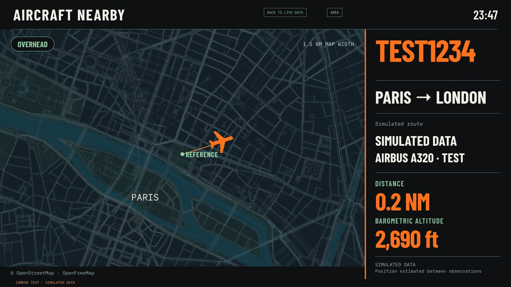

Look up.
Without looking up.
A live aircraft radar for your TV. Watch the planes near a city you choose, with their estimated positions, trails and flight details.
For rooted LG webOS TVs with Homebrew Channel and Glasshouse.

The sky around you,
on your screen.
Choose a city and an observation radius on your TV. When a nearby aircraft is detected, the screensaver follows it across the map and shows available flight information.
Make it yours
Choose your own city and a radius from 1 to 50 km.
Read it your way
Use English or Portuguese, and metric or aviation units.
Follow the flight
See estimated positions, trails and details when available from the data providers.
Ready for takeoff?
This is a homebrew project, not an LG App Store app. Installation requires a rooted LG webOS TV, the Homebrew Channel and Glasshouse with its Starfield screensaver selected.
- 01
Download the IPK
Get the experimental installer from GitHub Releases. It does not contain a preselected personal location.
- 02
Install on your TV
Use the Glasshouse dashboard to upload the IPK, following the installation guide.
- 03
Choose your sky
Open the app on your TV, select a city, radius, language and units, then prepare and activate it.
The on-TV setup and native map have been exercised on one webOS 5 TV. The current release's display changes, other models and persistence after a physical restart have not been verified.
A few details.
Can I install it on any LG TV?
No. The native version needs a rooted LG webOS TV, Homebrew Channel and Glasshouse. Root availability depends on the model and firmware.
Does it work on other devices?
There is a local browser preview, but no native Android TV, Google TV, Samsung TV or Apple TV version is implemented or verified. Developers and coding agents can use the porting guide without an LG TV.
Is the flight data real?
The screensaver uses live aircraft feeds, with estimated positions and coverage that varies by provider. The image on this page uses a clearly labelled simulated flight.
What happens to my location?
Your selection is kept on the TV. Third-party services receive city searches, approximate coordinates or map requests, and the local helper exposes the exact selection to other apps on that TV. Read the privacy details.